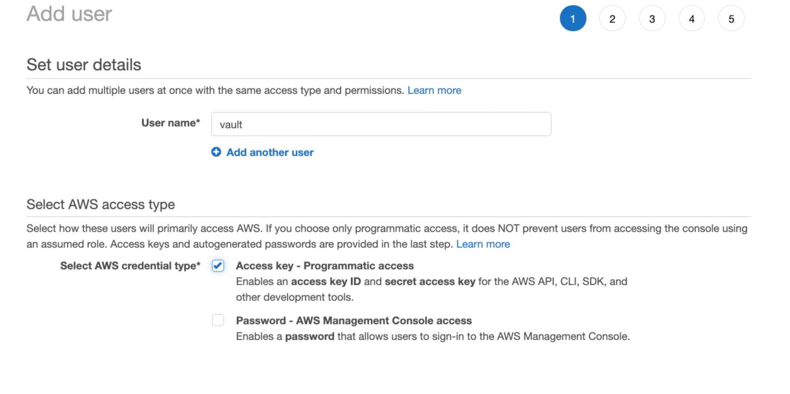
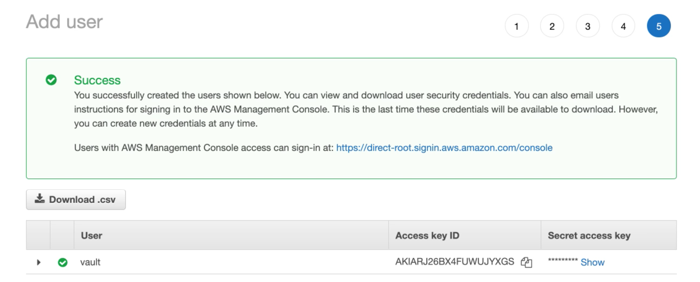
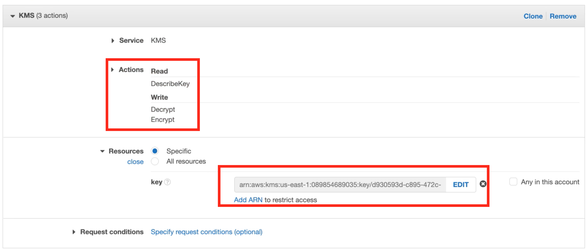
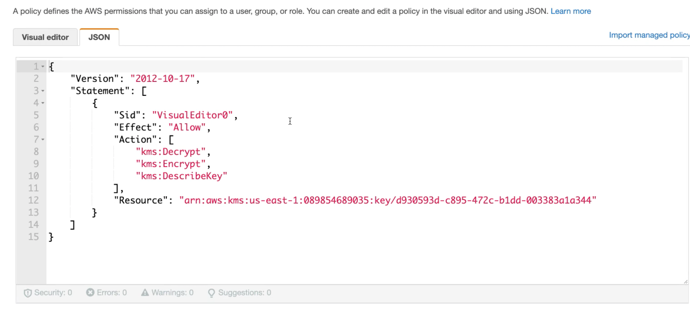
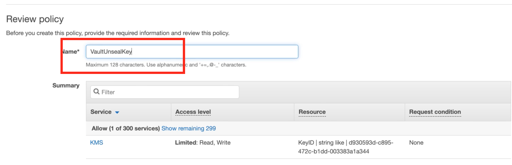
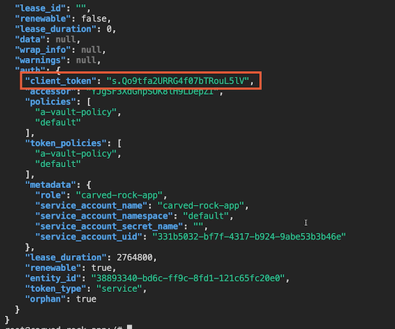

L6 Integrating Vault with Kubernetes
1 Vault Helm Chart & Auto Unseal
Vault Helm Chart
# Helm 3 & Kubernetes 1.14+
# Use Helm --dry-run flag outside of local experiments
helm install vault hashicorp/vault # Standalone
helm install vault hashicorp/vault --set "server.dev.enabled=true” # Dev
helm install vault hashicorp/vault --set "server.ha.enabled=true" # HA
helm install vault hashicorp/vault --set "injector.externalVaultAddr=..." # External
Auto Unseal
Entrust the unseal key to a service
- Cloud Key Management Service (KMS)
- Another Vault Server
Retrieve the unseal key & continue as usual
Automation is easier
Reduce wait-time to recover
Single service as a point of failure
Recovery keys for future quorum operations
Demo: Deploying via the Vault Helm Chart
$ helm repo add hashicorp https://helm.releases.hashicorp.com
"hashicorp" has been added to your repositories
Install Consul
helm-consul-values.yml
client:
enabled: true
server:
replicas: 1
bootstrapExpect: 1
disruptionBudget:
maxUnavailable: 0
$ helm install consul hashicorp/consul --values helm-consul-values.yml
NAME: consul
LAST DEPLOYED: Tue Jan 3 21:32:46 2023
NAMESPACE: default
STATUS: deployed
REVISION: 1
NOTES:
Thank you for installing HashiCorp Consul!
Your release is named consul.
To learn more about the release, run:
$ helm status consul --namespace default
$ helm get all consul --namespace default
Consul on Kubernetes Documentation:
https://www.consul.io/docs/platform/k8s
Consul on Kubernetes CLI Reference:
https://www.consul.io/docs/k8s/k8s-cli
Install vault
helm-vault-values.yml
server:
affinity: ""
ha:
enabled: true
#extraVolumes:
# - name: vault-seal-config
# type: secret
#extraArgs: "-config=/vault/userconfig/vault-seal-config/vault-seal.hcl"
helm install vault hashicorp/vault --values helm-vault-values.yml
NAME: vault
LAST DEPLOYED: Tue Jan 3 21:38:46 2023
NAMESPACE: default
STATUS: deployed
REVISION: 1
NOTES:
Thank you for installing HashiCorp Vault!
Now that you have deployed Vault, you should look over the docs on using
Vault with Kubernetes available here:
https://www.vaultproject.io/docs/
Your release is named vault. To learn more about the release, try:
$ helm status vault
$ helm get manifest vault
$ kubectl get pod
NAME READY STATUS RESTARTS AGE
consul-consul-client-qwbjj 1/1 Running 0 9m42s
consul-consul-connect-injector-69996cb66b-vjrnm 1/1 Running 0 9m42s
consul-consul-server-0 1/1 Running 0 9m42s
consul-consul-webhook-cert-manager-654cbb5df6-xhlzg 1/1 Running 0 9m42s
vault-0 0/1 Running 0 3m41s
vault-1 0/1 Running 0 3m41s
vault-2 0/1 Running 0 3m40s
vault-agent-injector-8b6fd97b8-rg7b9 1/1 Running 0 3m41s
$ kubectl exec vault-0 -- vault status
Key Value
--- -----
Seal Type shamir
Initialized false
Sealed true
Total Shares 0
Threshold 0
Unseal Progress 0/0
Unseal Nonce n/a
Version 1.12.1
Build Date 2022-10-27T12:32:05Z
Storage Type consul
HA Enabled true
command terminated with exit code 2
helm uninstall vault
Demo: Configuring Auto Unseal
We can configure Vault to auto unseal, we first need to set up a KMS to provide the unseal key. I'll be using AWS KMS for this demo


vault-seal.hcl
seal "awskms" {
region = "us-east-1"
access_key = ""
secret_key = ""
kms_key_id = "d930593d-c895-472c-b1dd-003383a1a344"
}
$ kubectl create secret generic vault-seal-config--from-file vault-seal.hcl
secret/vault-seal-config created
Add KMS Actions and Resources



helm install vault hashicorp/vault -values helm-vault-values.yml
$ kubectl exec vault-0 -- vault status
Key Value
--- -----
Seal Type awskms
Initialized false
Sealed true
Total Shares 0
Threshold 0
Unseal Progress 0/0
Unseal Nonce n/a
Version 1.12.1
Build Date 2022-10-27T12:32:05Z
Storage Type consul
HA Enabled true
command terminated with exit code 2
kubectl exec vault-0 -- vault operator init
Demo: Configuring Kubernetes Authentication
helm install vault hashicorp/vault
$ kubectl exec vault-0 -- vault operator init
Unseal Key 1: R6MbZVEX1F8z3jTUocGrICh7xUdhKqwWrrqlisYlAbSp
Unseal Key 2: ep8Pn/0c5MIJrN1tTY7b0IPXBCKsxnvwhdFc5h1hx5fF
Unseal Key 3: 5PMhCbVepBY2NR9Hp1caPgpieZ+Ou/haBhMxdV+Cf0tY
Unseal Key 4: twXwW8NCuWpt23YzqsT5niy/nOBxxhNybjWDxxlDOiaZ
Unseal Key 5: xjvoDte4WLH1kvNPOy2XIj9w5PBFmbzmBRYXvZ8IhUvY
Initial Root Token: hvs.aFXwTTgmQnwUeSFZC9H01R6i
Vault initialized with 5 key shares and a key threshold of 3. Please securely
distribute the key shares printed above. When the Vault is re-sealed,
restarted, or stopped, you must supply at least 3 of these keys to unseal it
before it can start servicing requests.
Vault does not store the generated root key. Without at least 3 keys to
reconstruct the root key, Vault will remain permanently sealed!
It is possible to generate new unseal keys, provided you have a quorum of
$ kubectl get pod
NAME READY STATUS RESTARTS AGE
vault-0 0/1 Running 0 38m
vault-1 0/1 Running 0 38m
vault-2 0/1 Running 0 38m
vault-agent-injector-8b6fd97b8-rg7b9 1/1 Running 0 38m
Fix the readiness probe error
kubectl exec -ti vault-0 -n vault -- vault operator unseal
# unseal first 3 keys
$ kubectl exec -ti vault-0 -- vault operator unseal
Unseal Key (will be hidden):
Key Value
--- -----
Seal Type shamir
Initialized true
Sealed true
Total Shares 5
Threshold 3
Unseal Progress 1/3
Unseal Nonce b1bbf576-20c7-c09e-a9d1-d4cde9ba922e
Version 1.12.1
Build Date 2022-10-27T12:32:05Z
Storage Type file
HA Enabled false
$ kubectl exec -ti vault-0 -- vault operator unseal
Unseal Key (will be hidden):
Key Value
--- -----
Seal Type shamir
Initialized true
Sealed true
Total Shares 5
Threshold 3
Unseal Progress 2/3
Unseal Nonce b1bbf576-20c7-c09e-a9d1-d4cde9ba922e
Version 1.12.1
Build Date 2022-10-27T12:32:05Z
Storage Type file
HA Enabled false
$ kubectl exec -ti vault-0 -- vault operator unseal
Unseal Key (will be hidden):
Key Value
--- -----
Seal Type shamir
Initialized true
Sealed false
Total Shares 5
Threshold 3
Version 1.12.1
Build Date 2022-10-27T12:32:05Z
Storage Type file
Cluster Name vault-cluster-b7f77b66
Cluster ID dcb8d7bd-7058-3642-4bdf-62b1f04962d7
HA Enabled false
$ kubectl get pod
NAME READY STATUS RESTARTS AGE
vault-0 1/1 Running 0 4m24s
vault-agent-injector-8b6fd97b8-s2k5d 1/1 Running 0 4m23s
- https://developer.hashicorp.com/vault/api-docs/auth/kubernetes
- https://docs.armory.io/continuous-deployment/armory-admin/secrets/vault-k8s-configuration/
$ kubectl exec -it vault-0 -- sh
/ $
$ export VAULT_TOKEN=hvs.aFXwTTgmQnwUeSFZC9H01R6i
$ vault auth enable kubernetes
# kubernetes auth config
# kubernetes auth config
vault write auth/kubernetes/config \
kubernetes_host="https://$KUBERNETES_PORT_443_TCP_ADDR:64\43" \
token_reviewer_jwt="$(cat /var/run/secrets/kubernetes.io/serviceaccount/token)" \
kubernetes_ca_cert=@/var/run/secrets/kubernetes.io/serviceaccount/ca.crt \
issuer="https://kubernetes.default.svc.cluster.local"
Success! Data written to: auth/kubernetes/config
vault write auth/kubernetes/role/carved-rock-app bound_service_account_names=carved-rock-app bound_service_account_namespaces=default policies=a-vault-policy
Success! Data written to: auth/kubernetes/role/carved-rock-app
$ kubectl create serviceaccount carved-rock-app
serviceaccount/carved-rock-app created
carved-rock-app.yml
apiVersion: v1
kind: Pod
metadata:
name: carved-rock-app
labels:
app: carved-rock-app
spec:
serviceAccountName: carved-rock-app
containers:
- image: ubuntu
command:
- "sleep"
- "604800"
imagePullPolicy: IfNotPresent
name: carved-rock-app
restartPolicy: Always
kubectl apply -f carved-rock-app.yml
kubectl exec -it carved-rock-app -- bash
root@carved-rock-app:/#
apt update && apt-get install curl dnsutils jg
root@carved-rock-app:/# nslookup vault
Server: 10.96.0.10
Address: 10.96.0.10#53
Name: vault.default.svc.cluster.local
Address: 10.110.139.135
root@carved-rock-app:/# curl -i http://vault:8200
HTTP/1.1 307 Temporary Redirect
Cache-Control: no-store
Content-Type: text/html; charset=utf-8
Location: /ui/
Strict-Transport-Security: max-age=31536000; includeSubDomains
Date: Tue, 03 Jan 2023 15:50:16 GMT
Content-Length: 40
<a href="/ui/">Temporary Redirect</a>.
root@carved-rock-app:/# env | grep VAULT
VAULT_SERVICE_PORT_HTTPS_INTERNAL=8201
VAULT_PORT_8201_TCP_PROTO=tcp
VAULT_PORT_8200_TCP_ADDR=10.110.139.135
VAULT_SERVICE_PORT=8200
VAULT_PORT_8201_TCP_PORT=8201
VAULT_AGENT_INJECTOR_SVC_PORT_443_TCP_PROTO=tcp
VAULT_AGENT_INJECTOR_SVC_PORT=tcp://10.110.86.252:443
VAULT_AGENT_INJECTOR_SVC_SERVICE_PORT_HTTPS=443
VAULT_PORT_8200_TCP_PROTO=tcp
VAULT_PORT_8200_TCP_PORT=8200
VAULT_AGENT_INJECTOR_SVC_PORT_443_TCP_PORT=443
VAULT_PORT_8201_TCP=tcp://10.110.139.135:8201
VAULT_SERVICE_PORT_HTTP=8200
VAULT_AGENT_INJECTOR_SVC_PORT_443_TCP_ADDR=10.110.86.252
VAULT_PORT_8201_TCP_ADDR=10.110.139.135
VAULT_PORT_8200_TCP=tcp://10.110.139.135:8200
VAULT_AGENT_INJECTOR_SVC_PORT_443_TCP=tcp://10.110.86.252:443
VAULT_AGENT_INJECTOR_SVC_SERVICE_HOST=10.110.86.252
VAULT_SERVICE_HOST=10.110.139.135
VAULT_AGENT_INJECTOR_SVC_SERVICE_PORT=443
VAULT_PORT=tcp://10.110.139.135:8200
curl -X POST --data "{\"jwt\": \"$(cat /var/run/secrets/kubernetes.io/serviceaccount/token)\", \"role\": \"carved-rock-app\"}" http://vault:8200/v1/auth/kubernetes/login | jg

/ $ export VAULT_TOKEN=hvs.aFXwTTgmQnwUeSFZC9H01R6i
/ $ vault write auth/kubernetes/role/carved-rock-app bound_service_account_names=not-carved-rock-app bo
und_service_account_namespaces=default policies=a-vault-policy
Success! Data written to: auth/kubernetes/role/carved-rock-app
# curl -X POST --data "{\"jwt\": \"$(cat /var/run/secrets/kubernetes.io/serviceaccount/token)\", \"role\": \"carved-rock-app\"}" http://vault:8200/v1/auth/kubernetes/login | jq
% Total % Received % Xferd Average Speed Time Time Time Current
Dload Upload Total Spent Left Speed
100 1115 100 51 100 1064 9611 195k --:--:-- --:--:-- --:--:-- 217k
{
"errors": [
"service account name not authorized"
]
}